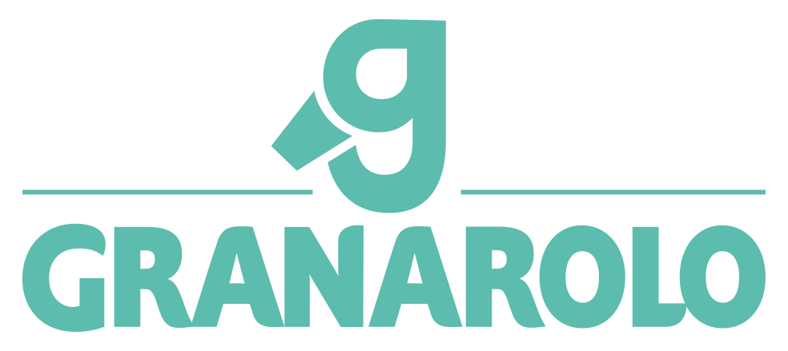
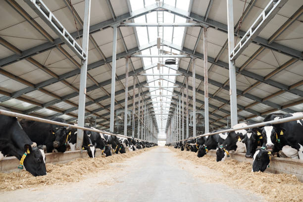
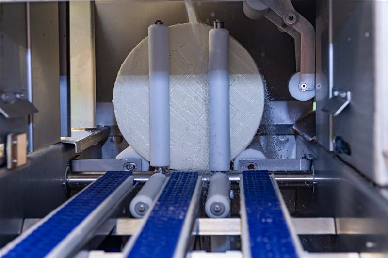
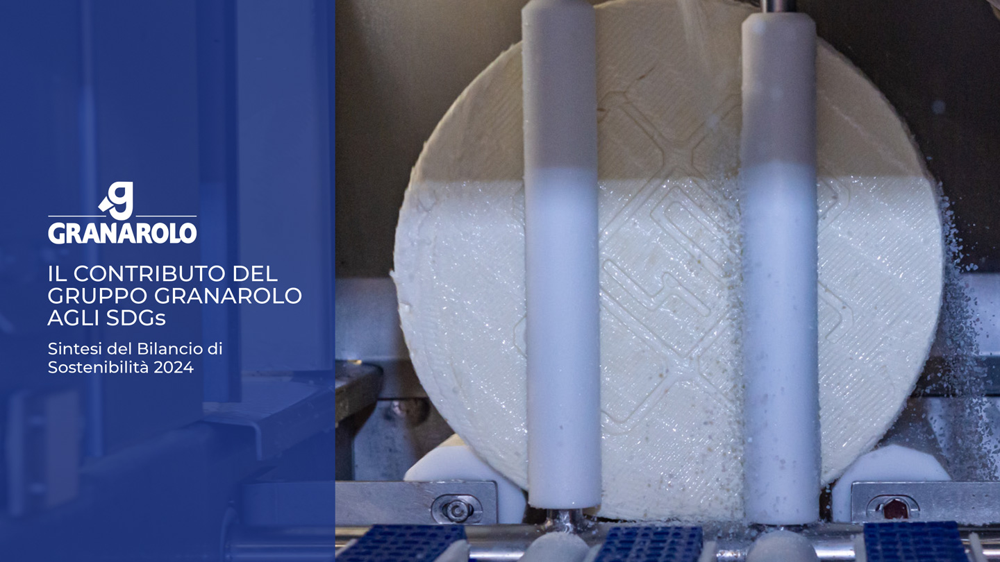

Benessere & Clima
Transizione verso l'indipendenza energetica e calo drastico delle emissioni alla stalla tramite la produzione di 30 milioni di mc di metano anno[5].
-30% Target gas serra 2030[4]

Dalla stalla allo scaffale, la nostra filiera si impegna per ridurre l'impatto ambientale. L'obiettivo è un sistema agroalimentare sostenibile e resiliente[1].
Scarica i Report 2024
100%
Benessere Certificato
Il nostro impegno inizia dove nasce il latte. Lavoriamo con 475 allevatori soci per implementare tecnologie 5.0, riducendo l'uso di farmaci e migliorando l'efficienza produttiva e ambientale delle stalle del gruppo[3].
Economia circolare: 10 impianti consortili a biometano alimentati da reflui zootecnici
Monitoraggio e ottimizzazione delle risorse idriche ed energetiche della filiera
A inizio 2019, a tre anni di distanza dal precedente lavoro di definizione dei Goals di riferimento per il Gruppo, Granarolo ha avviato un processo mirato a valutare e approfondire il contributo che l'azienda può dare per il raggiungimento degli obiettivi di sviluppo sostenibile (SDGs).
L'allineamento tra i Sustainable Development Goals e l'attività di Granarolo è stato svolto secondo la SDG Compass, sviluppata da UN Global Compact, GRI e World Business Council for Sustainable Development.
I 7 SDGs così individuati sono stati collegati direttamente alle tematiche material per Granarolo e ai progetti innovativi di sviluppo e socio-ambientali realizzati dal Gruppo.
Transizione verso l'indipendenza energetica e calo drastico delle emissioni alla stalla tramite la produzione di 30 milioni di mc di metano anno[5].
-30% Target gas serra 2030[4]
Packaging intelligente e utilizzo di materiali riciclati e alternativi per abbattere l'impatto ambientale lungo l'intero ciclo di vita del prodotto[6].
5.6k t CO₂ Risparmiata '18-'24[7]
Allungamento mirato della shelf life dei prodotti freschi e riduzione dei resi commerciali (-816 tonnellate rispetto al 2023)[10].
48M Pack con TooGoodToGo[11]
Tonnellate totali stimate di gas serra (GHG) rilasciate nell'atmosfera

Documentazione metodologica estesa conforme alle direttive CSRD e tassonomia europea, contenente l'analisi di doppia materialità[12].
SCARICA PDF
Infografiche estrapolate e risultati chiave di performance adatti ad una consultazione aziendale rapida e immediata.
SCARICA SINTESI[1] rep. sintesi — Sintesi Bilancio, Stakeholder Letter, p. 2.
[2] rep. sintesi — Sintesi Bilancio, Sezione Numeri, p. 13.
[3] rep. sintesi — Progetto 1: Benessere Animale, p. 4.
[4] rep. sintesi — Infografica Obiettivi 2030, p. 3.
[5] rep. sintesi — Azioni Progetto Biometano, p. 4.
[6] rep. sintesi — Progetto 2: Riduzione Plastica, p. 5.
[7] rep. sintesi — Dati Consuntivati Packaging, p. 5.
[8] rep. sintesi — Obiettivi Emissioni Plastica, p. 5.
[9] rep. sintesi — Progetto 3: Anti-Spreco, p. 6.
[10] rep. sintesi — Risultati Progetto Resi, p. 6.
[11] rep. sintesi — Campagna Too Good To Go, p. 6.
[12] rep. completo — Analisi Doppia Rilevanza CSRD, p. 7.